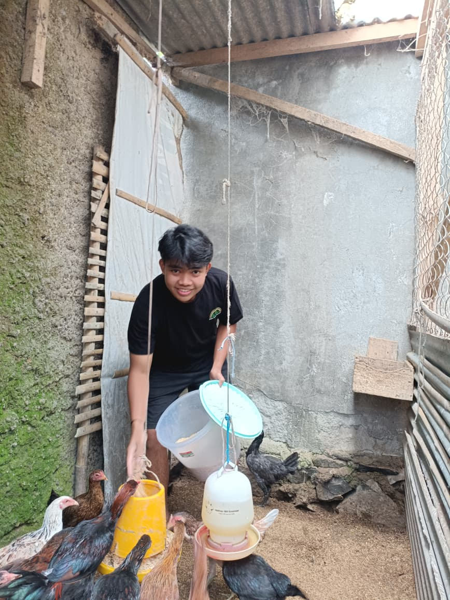
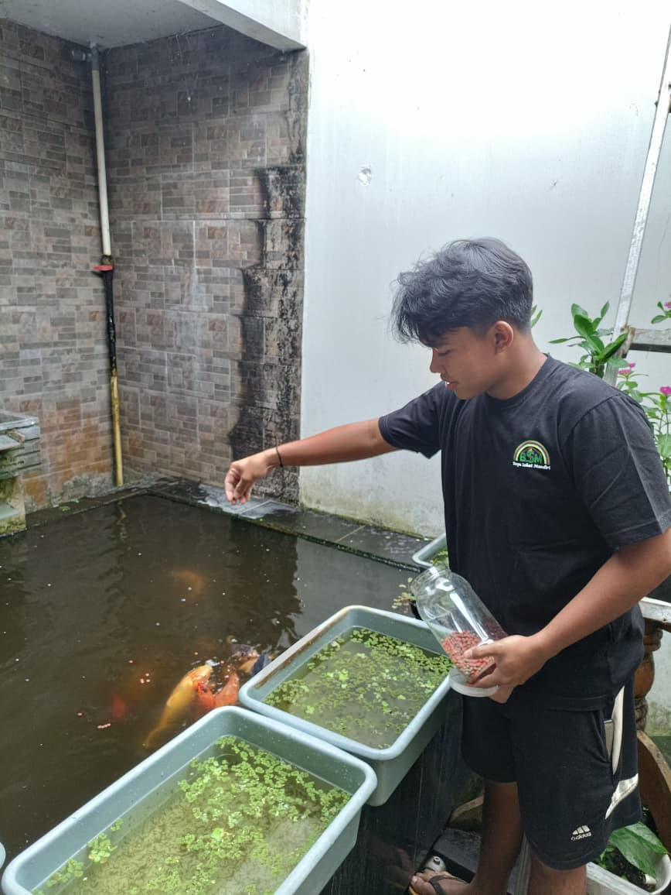
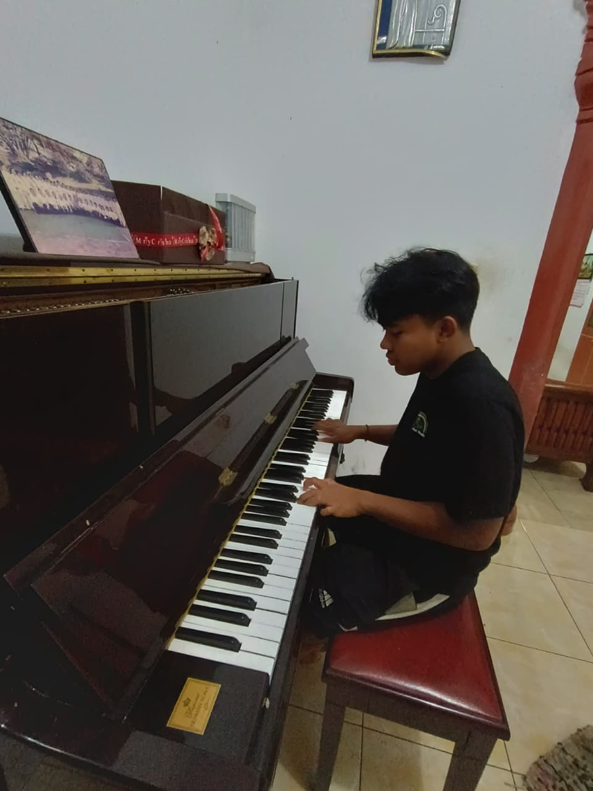
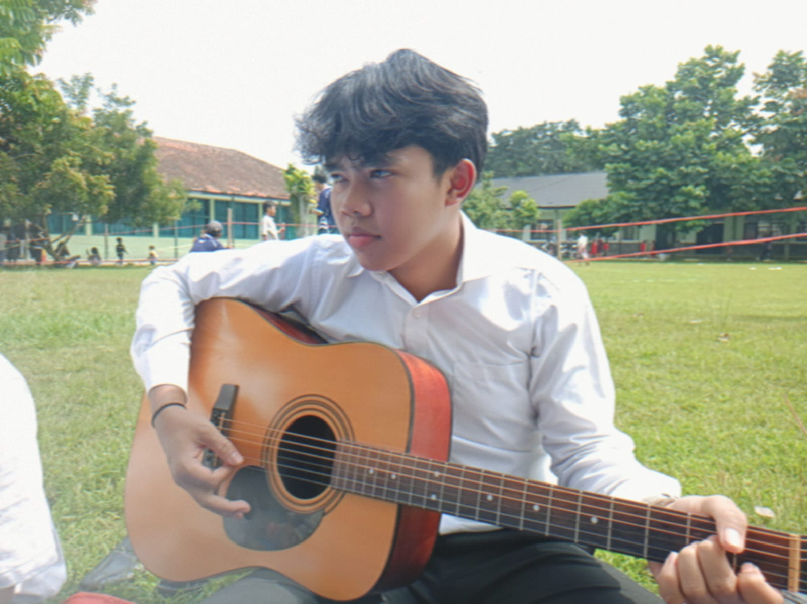
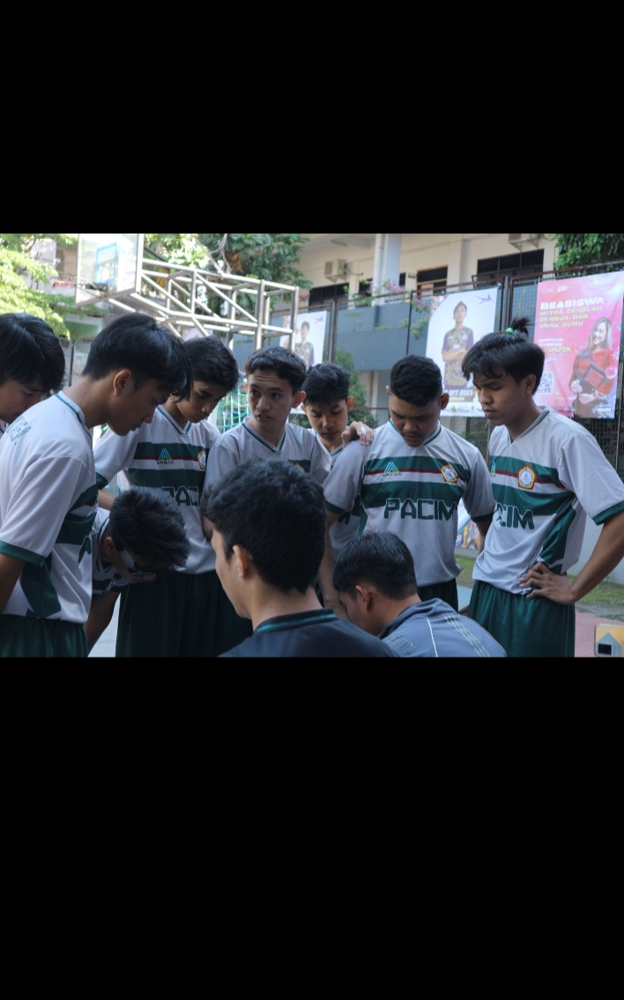
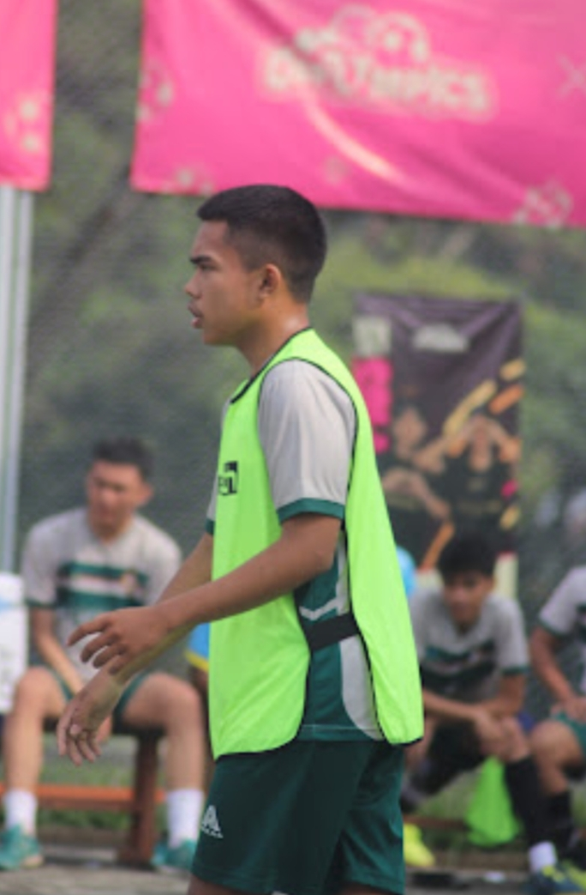

Galeri Kegiatan & Kreativitas






Video Inspirasi
Tentang Saya & Hobi Saya
Halo! Saya Evan Yehuda Prananta Ginting 👋
Saya seorang mahasiswa Fakultas Teknologi Informasi – Teknik Informatika. Dalam keseharian saya suka berolahraga, menonton film, membaca, dan berlari. Halaman ini saya buat sebagai ruang bebas untuk menampilkan kreativitas saya.
Apa yang saya pelajari di kelas Web Development?
Selama mengikuti mata kuliah ini, saya belajar banyak hal seperti HTML, CSS, JavaScript, Tailwind, dan membuat website responsif. Tantangan terbesar saya adalah mencoba meniru desain asli dari website Coca-Cola, namun proses itu sangat meningkatkan kemampuan saya dalam layouting dan detail visual.